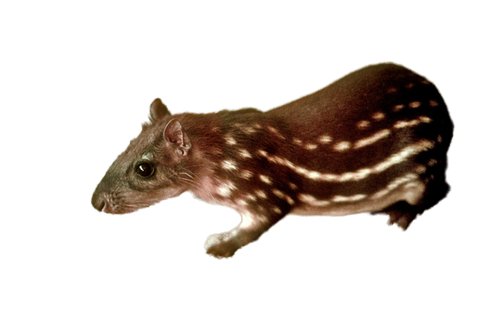

Available Pet Types for Temporary Rental
- Interactive pets:
- Independent pets
- Observable pets
-  Verbal Interaction Pets
Our Services
We offer flexible rental durations, allowing you to rent a pet for days, weeks, or even months. The rental costs vary based on the type of pet and the duration of the rental. You can easily request a rental by filling out a simple form and providing the necessary information.
If you require additional services like home delivery of the pet or accessories, please let us know in your rental request.
Real Experiences

"Renting a cat from petRent was such a joy! I needed some company during a busy work week, and the cat brought so much happiness to my home. I highly recommend their services!"
- Jane Doe
"I rented a dog for a family gathering, and it was the highlight of the event. The dog was friendly and well-trained. My kids loved playing with him. Thank you, petRent!"
- John Smith
Care and Responsibilities
During the rental period, it's crucial to provide proper care and attention to the rented pet. As a responsible temporary pet owner, you must ensure the pet's well-being and safety.
Our guidelines include providing a safe environment, feeding the pet according to our instructions, and giving them plenty of love and affection. We also recommend introducing the pet to their temporary home gradually to make them feel comfortable.
Please treat the pet with care and respect, just like you would with your own pet.